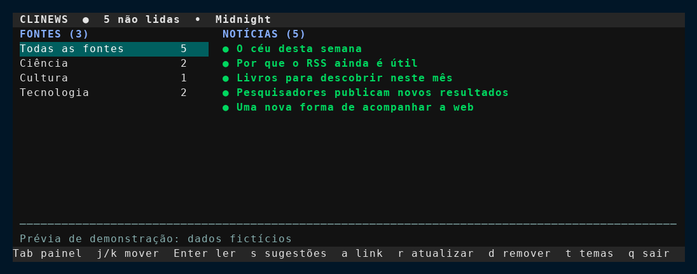
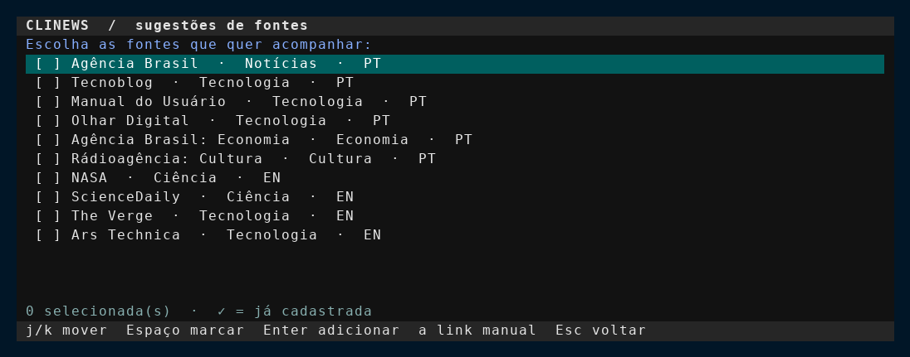
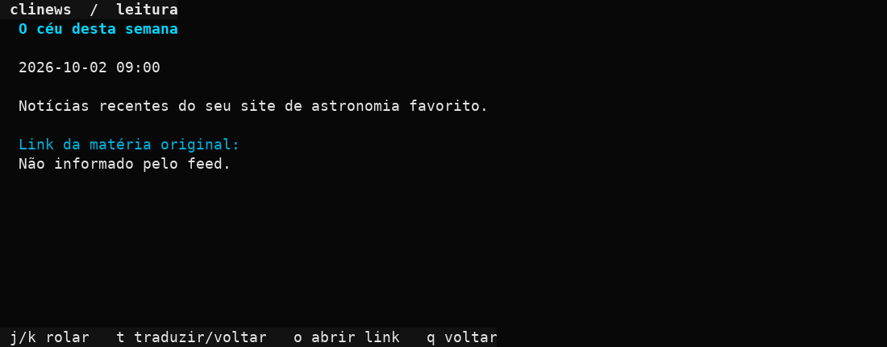
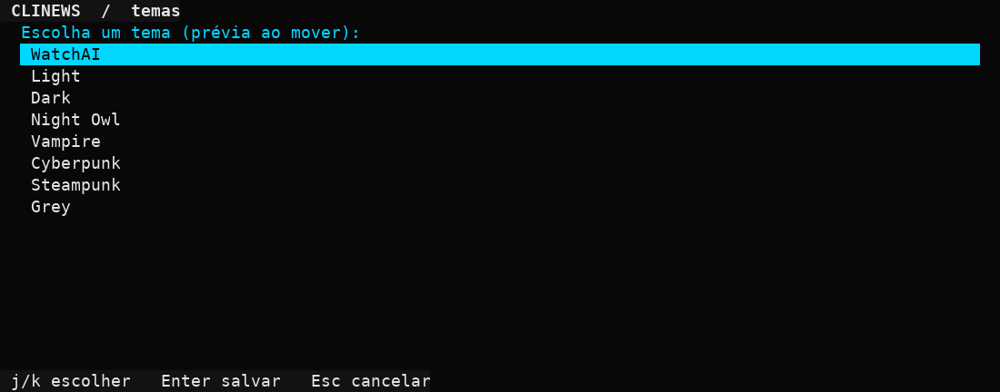

Suas fontes, suas regras
Adicione qualquer feed RSS ou Atom. Comece pelas sugestões ou cole o endereço de um site.
Escolha fontes RSS ou Atom, acompanhe as novidades e leia os resumos direto no terminal. Suas fontes e notícias ficam salvas no computador.
Gratuito para instalar · Linux · Feito em Python

Explore as telas reais da TUI no modo de demonstração, com dados fictícios. Clique em uma imagem para ampliá-la.



O clinews reúne as atualizações dos seus sites em uma lista clara e leve, controlada pelo teclado.
Adicione qualquer feed RSS ou Atom. Comece pelas sugestões ou cole o endereço de um site.
Navegue entre fontes e notícias sem sair do terminal, com atalhos simples e sete temas.
Pressione t ao ler uma notícia em inglês para ver o título e o resumo em português.
Atualize quando quiser e acompanhe o que ainda não leu. Sem sincronização em segundo plano.
Os feeds e as matérias ficam no seu computador e continuam acessíveis sem conexão.
Escolha entre sete paletas de cores e ajuste a experiência ao seu terminal.
Baixe pela Snap Store ou use o comando ao lado.
Escolha sugestões por assunto ou cole o endereço do seu site.
Atualize as notícias e navegue com j, k e Enter.
$ sudo snap install clinews
$ clinewsA tradução usa a Google Cloud Translation API e é opcional. Ao usar o atalho pela primeira vez, o app pede sua chave de API e a guarda localmente.
Traga-as para o terminal com o clinews.
Instalar clinews